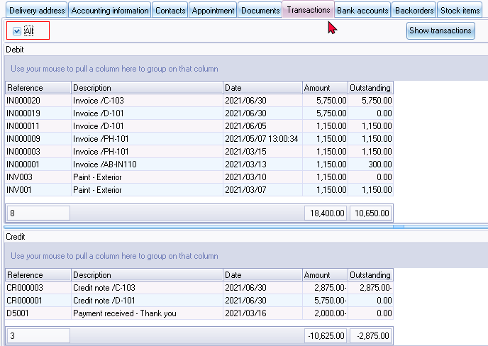
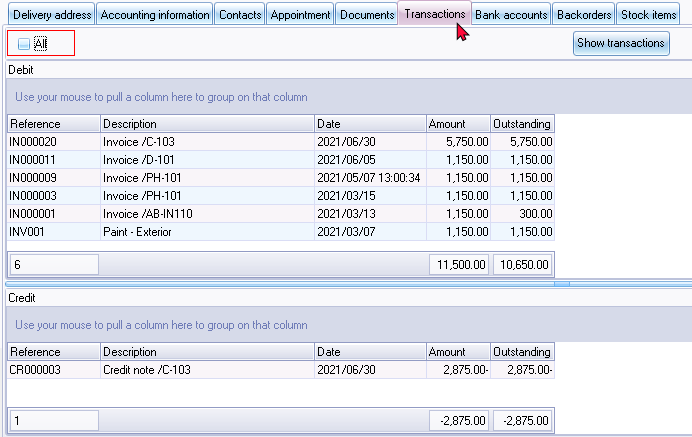
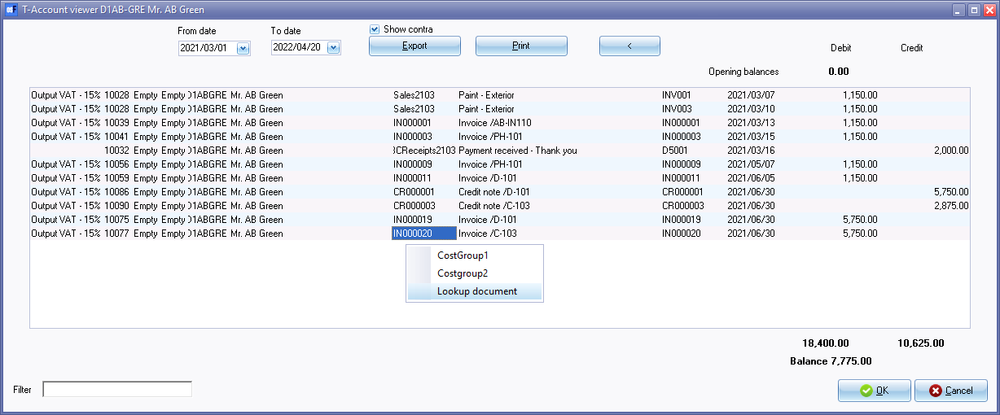
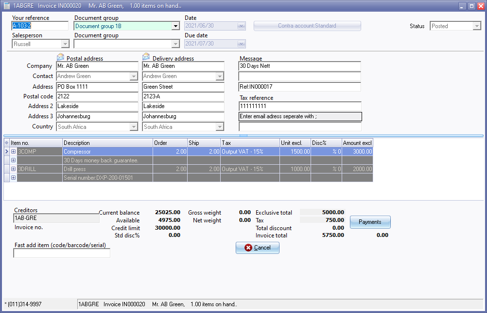
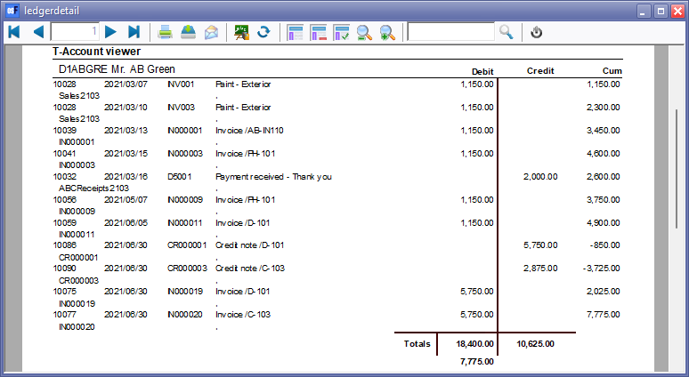
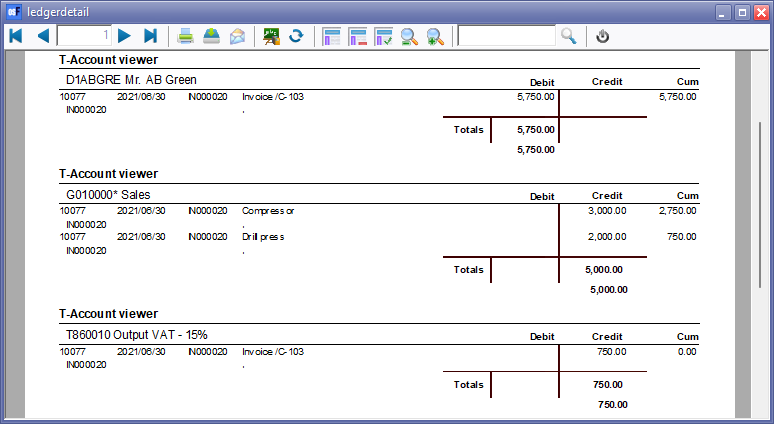

Debtor accounts - Transactions tab
Any transactions which have been processed (posted documents and posted batches) for that debtor (customer / client) account will be listed:
- Batch (Journal) Transactions which have been updated (posted) to the ledger.
- Document Transactions (i.e. Invoices and Credit notes) which have been updated (posted) to the ledger.
|
|
To maximise the Transactions tab and/or Debit / Credit transactions section of the screen, click on the |


All selected - All transactions listed. Those transactions, which are fully linked or settled, will display an 0.00 amount in the Outstanding column:

All not selected - This is the default option. Only those with outstanding amounts will be listed:

|
|
Before sending statements to your debtors (customers / clients), it is recommended that any amounts in the credit section be linked to any outstanding invoices or debit transactions. |

|
|
If the debtor (customer / client) account is not set as an open item, account, all transactions will be listed. |

It will list transactions as follows:
- Debit - Documents (i.e. Invoices and POS Invoices), Sales journal, Generate multiple transactions (Interest on overdue debtors, Debtors with charge amount, Fixed amount to all debtors), Opening Balances take-on, etc. It will list any transactions, for which amounts are entered in the Debit column of batches.
- Credit - Documents (i.e. Credit notes), Sales returns journal, Receipts journal, Generate multiple transactions (Balance debtors with amount), etc. It will list any transactions, for which amounts are entered in the Credit column of batches.
|
|
You may click on the column headings (i.e. Reference, Description, Date, Amount or Outstanding) to change the sort sequence from the ascending to the descending sequence. You may also click and drag any of the column headings to the left or right to change the sequence in which the columns are to be displayed. |
|
|
Before sending debtor statements, it is recommended that any amounts in the credit section be linked to any outstanding invoices or debit transactions. |
View Transactions - Show transactions context menu
- Select a transaction and click on the Show transactions context menu.
- On the "Transactions" screen, click on the Print button.

The Amount exclusive values are as follows:
- 0 = Amount exclusive
- 1 = Amount inclusive

View Transactions - Show Transactions button
T-Account viewer
- Click on the Show transactions button.
- Enter or select a start date and an end date, if necessary. Click on the Print button to print the transactions, if required.

|
|
You may double-click on a selected batch number to view only the transactions for the selected document. For example, if you need to view and print the transactions for Invoice "IN000020" only, double-click on the batch number "10077" |
|
|
Show contra - By default, this option is not selected. The contra accounts will not be printed in the "ledgerdetail" report when you click on the Print button. Show contra option selected you may view the Contra accounts in the T-Account-viewer. If you click on the Export button, the contra accounts will be included in Column A of a Spreadsheet. The Contra accounts consists of the following, separated by a comma: "G010000 Sales,T860010 Output VAT - 15%" Documents
Batches
|
Lookup document
You may right-click on a selected document and select "Lookup document" on the context menu of the "T-Account viewer".
The posted document will be displayed in a stand alone "Document entry" screen.

You will not be allowed to edit or change the posted document.
T-Account viewer - Print transactions
To print the transactions, in the "T-Account viewer", click on the Print button.

View a specific selected batch transaction (e.g. Invoice "IN000020" (batch number "10077).

T-Account viewer - Export transactions
To export the transactions, in the "T-Account viewer", click on the Export button. This will export the transactions, as selected displayed in the T-Account viewer, as a comma separated text file as a "Export.txt" file. The Exported file will automatically be opened in your in your system's app (program) associated with the CSV (Comma Separated Values) file types.